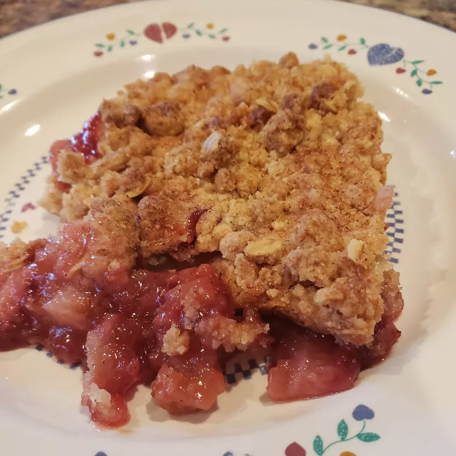

Strawberry Buckle
Description
Strawberry buckle's thick crust-like texture mixed with fresh strawberries is sure to make your day a sweet and tart one.
Ingredients
For Cake
- 2 cups all-purpose flour
- 2 teaspoons baking powder
- 1/2 teaspoon salt
- 4 tablespoons unsalted butter
- 3/4 cup sugar
- 1 large egg
- 1 teaspoon vanilla extract
- 1/2 cup milk
- 2 cups diced strawberries
For Topping
- 1/2 cup all-purpose flour
- 2/3 cup sugar
- 1/2 teaspoon ground ginger
- 1/8 teaspoon salt
- 5 tablespoons cold unsalted butter, diced
- 1 teaspoon milk>
Directions
- Adjust oven rack to middle position and preheat oven to 375°F. Grease baking pan. In a medium bowl, whisk together flour, baking powder, and salt; set aside.
- In the bowl of a stand mixer fitted with a paddle attachment, cream together butter and sugar until light and fluffy, about 3 minutes. Add egg and vanilla and beat to combine. Beat in 1/2 dry ingredients, followed by milk, followed by remaining dry ingredients. Stir in strawberries. Pour batter into prepared pan and smooth top.
- Make topping: In a medium bowl, combine flour, sugar, ginger, and salt and whisk to combine. Add cold butter and milk and cut into flour mixture until butter is incorporated. Mixture should have the texture of wet sand and hold together when pressed. Form mixture into small crumbs and scatter over top of buckle.
- Bake buckle until golden on top and a cake tester inserted into the middle of the cake comes out clean, about 45 minutes. Let cool completely before serving.